© 2025 Exams Success Group:
Your
Success in Exams is Our Priority
The Joy of a Teacher is the Success of his
Students.
I greet you this day,
These are the solutions to the CSEC past questions on Sequences.
The link to the video solutions will be provided for you. Please
subscribe to the YouTube channel to be notified of upcoming livestreams. You are welcome to ask questions during
the video livestreams.
If you find these resources valuable and helpful in your passing the
Mathematics test of the CSEC, please consider making a donation:
Cash App: $ExamsSuccess or
cash.app/ExamsSuccess
PayPal: @ExamsSuccess or
PayPal.me/ExamsSuccess
Google charges me for the hosting of this website and my other
educational websites. It does not host any of the websites for free.
Besides, I spend a lot of time to type the questions and the solutions well.
As you probably know, I provide clear explanations on the solutions.
Your donation is appreciated.
Comments, ideas, areas of improvement, questions, and constructive
criticisms are welcome.
Feel free to contact me. Please be positive in your message.
I wish you the best.
Thank you.
(1.) If you notice that the pattern represents an arithmetic sequence, it is recommended that you save time by
using the formulas for Arithmetic Sequences
to determine the nth term as applicable.
(2.) If you notice that the pattern represents a geometric sequence, it is recommended that you save time by
using the formulas for Geometric Sequences
to determine the nth term as applicable.
(3.) If the sequence is neither an arithmetic nor a geometric sequence, then it is important to establish a
pattern/rule for each row and column so that we can determine the formula that works
for n
$ (1.)\:\: AS_n = a + d(n - 1) \\[5ex] (2.)\:\: AS_n = vn + w \:\:where\:\: v = d \:\:and\:\: w = a - d \\[5ex] (3.)\:\: p = a + d(n - 1) \\[5ex] (4.)\:\: SAS_n = \dfrac{n}{2}(a + AS_n) \\[7ex] (5.)\:\: SAS_n = \dfrac{n}{2}(a + p) \\[7ex] (6.)\:\: SAS_n = \dfrac{n}{2}[2a + d(n - 1)] \\[7ex] (7.)\:\: n = \dfrac{2 * SAS_n}{a + p} \\[7ex] (8.)\:\: n = \dfrac{p - a + d}{d} \\[7ex] (9.)\:\: n = \dfrac{-(2a - d) \pm \sqrt{(2a - d)^2 + 8d*SAS_n}}{2d} \\[7ex] (10.)\;\; d = \dfrac{(p - a)(p + a)}{2 * SAS_n - p - a} $
$ (1.)\:\: GS_n = ar^{n - 1} \\[5ex] (2.)\:\: SGS_n = \dfrac{a(r^{n} - 1)}{r - 1} \:\:for\:\: r \gt 1 \\[7ex] (3.)\:\: SGS_n = \dfrac{a(1 - r^{n})}{1 - r} \:\:for\:\: r \lt 1 \\[7ex] (4.)\:\: n = \dfrac{\log{\left[\dfrac{SGS_n(r - 1)}{a} + 1\right]}}{\log r} \\[7ex] (5.)\:\: If\:\:r \lt 1,\:\:the\:\:series\:\:converges\:\:and\:\: S_{\infty} = \dfrac{a}{1 - r} \\[7ex] (6.)\:\: If\:\:r \gt 1,\:\:the\:\:series\:\:diverges \\[5ex] (7.)\:\: If\:\:r = 1,\:\:S_{\infty}\:\:DNE \\[5ex] (8.)\:\: r = \dfrac{S_{\infty} - a}{S_{\infty}} \\[7ex] (9.)\:\: a = S_{\infty}(1 - r) $
$ QS = 1st,\:\:\:\:2nd,\:\:\:3rd,\:\:\:4th,... \\[5ex] QS_n = an^2 + bn + c \\[5ex] (1.)\:\: a = \dfrac{1st + 3rd - 2(2nd)}{2} \\[7ex] (2.)\:\: b = \dfrac{8(2nd) - 5(1st) - 3(3rd)}{2} \\[7ex] (3.)\:\: c = 3(1st) - 3(2nd) + 3rd \\[5ex] (4.)\:\: \therefore QS_n = \dfrac{1st + 3rd - 2(2nd)}{2} * n^2 + \dfrac{8(2nd) - 5(1st) - 3(3rd)}{2} * n + 3(1st) - 3(2nd) + 3rd \\[7ex] The\:\:Left\:\:Hand\:\:Side\:\:must\;\;be\:\:equal\:\:to\;\;the\:\:Right\:\:Hand\:\:Side \\[5ex] (5.)\:\: a + b + c = 1st \\[5ex] (6.)\:\: 4a + 2b + c = 2nd \\[5ex] (7.)\:\: 9a + 3b + c = 3rd \\[5ex] (8.)\:\: 3a + b = 2nd - 1st \\[5ex] (9.)\:\: 8a + 2b = 3rd - 1st $
$ \underline{Triangular\;\;Number\;\;Sequence} \\[3ex] (1.)\:\: TS_n = \dfrac{n(n + 1)}{2} \\[7ex] (2.)\;\; n = \dfrac{\sqrt{8 * TS_n + 1} - 1}{2} \\[7ex] (3.)\:\: TS_n = C(n + 1, 2)...Combinatorics\;\;symbol\;\;for\;\;Combinations \\[5ex] (4.)\;\; STS_n = \dfrac{n(n + 1)(n + 2)}{6} \\[7ex] (5.)\:\: STS_n = C(n + 2, 3)...Combinatorics\;\;symbol\;\;for\;\;Combinations \\[7ex] \underline{Square\;\;Number\;\;Sequence} \\[3ex] (1.)\:\: SS_n = n^2 \\[5ex] (2.)\;\; n = \sqrt{SS_n} \\[5ex] (3.)\;\; SSS_n = \dfrac{n(n + 1)(2n + 1)}{6} \\[7ex] \underline{Cube\;\;Number\;\;Sequence} \\[3ex] (1.)\:\: CS_n = n^3 \\[5ex] (2.)\;\; n = \sqrt[3]{CS_n} \\[5ex] (3.)\;\; SCS_n = \left[\dfrac{n(n + 1)}{2}\right]^2 \\[7ex] (4.)\;\; n = \dfrac{\sqrt{8\sqrt{SCS_n} + 1} - 1}{2} \\[7ex] $
$ \underline{First-Order\;\;Linear\;\;Recurrence\;\;Relation} \\[3ex] (1.)\:\: RS_{n + 1} = r * RS_{n} + a \\[5ex] (2.)\:\: RS_{n + 1} = \dfrac{RS_1 * r^n(r - 1) + a(r^n - 1)}{r - 1} \;\;\;for\;\;r \gt 1 \\[7ex] (3.)\;\; RS_{n + 1} = \dfrac{RS_1 * r^n(1 - r) + a(1 - r^n)}{1 - r} \;\;\;for\;\;r \lt 1 \\[7ex] \underline{Fibonacci\;\;Sequence} \\[3ex] (1.)\;\; \phi = \dfrac{1 + \sqrt{5}}{2} \\[7ex] (2.)\;\; FS_n = \dfrac{\sqrt{5}}{5}\left[\left(\dfrac{1 + \sqrt{5}}{2}\right)^n - \left(\dfrac{1 - \sqrt{5}}{2}\right)^n\right] \\[7ex] (3.)\;\; FS_n = \dfrac{\sqrt{5}}{5}\left[\phi^n - \left(\dfrac{1 - \sqrt{5}}{2}\right)^n\right] \\[7ex] (4.)\;\; SFS_n = \dfrac{\sqrt{5}}{5}\left[\dfrac{\phi^3(\phi^{n - 1} - 1) + [(\phi - 1)(1 - \phi^2)][(1 - \phi)^{n - 1} - 1]}{\phi(\phi - 1)}\right] + 1 $
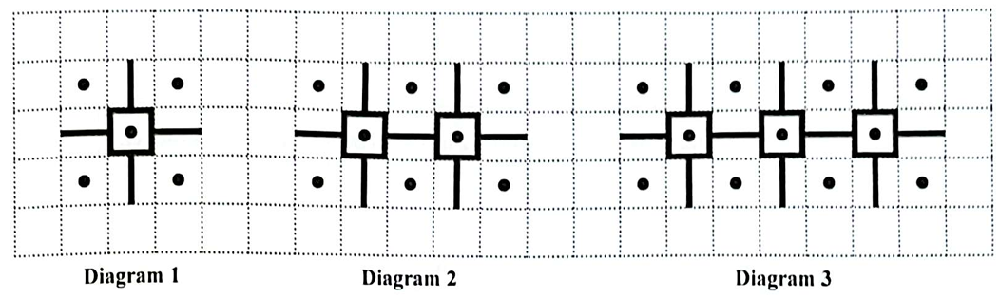
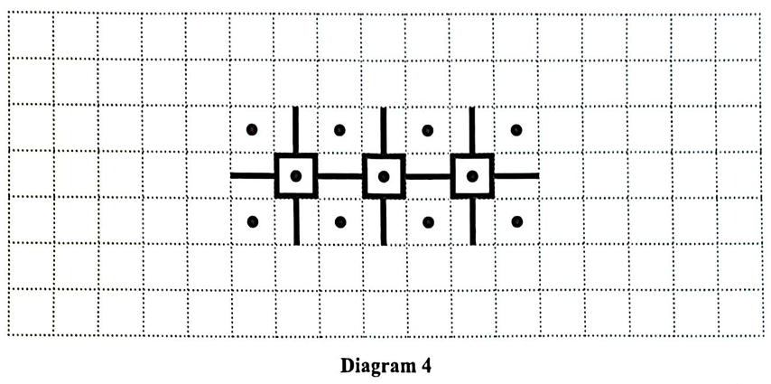
| Diagram | Number of Dots (D) | Number of Lines (L) |
|---|---|---|
| 1 | 5 | 8 |
| 2 | 8 | 15 |
| 3 | 11 | 22 |
| 4 | ....... | ....... |
| ....... | 59 | ....... |
| n | ....... | ....... |
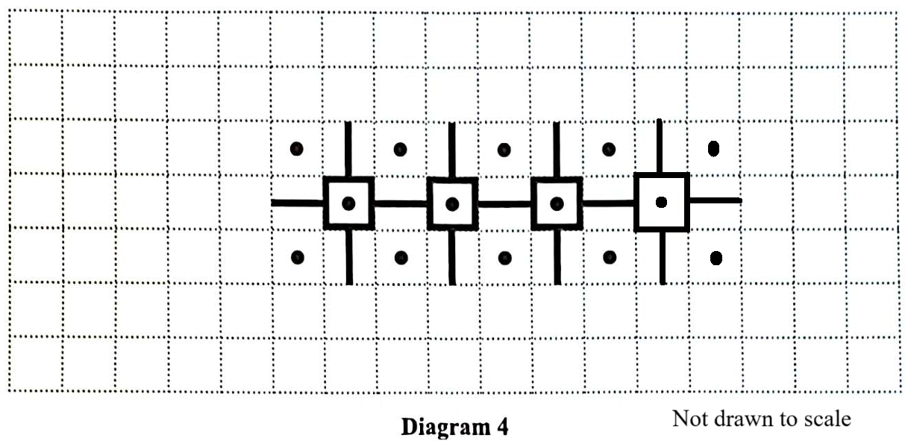
| Diagram | Number of Dots (D) | Number of Lines (L) |
|---|---|---|
| 1 | 5 | 8 |
| 2 | 8 | 15 |
| 3 | 11 | 22 |
| 4 | 14 | 29 |
| 19 | 59 | 134 |
| n | 3n + 2 | 7n + 1 |
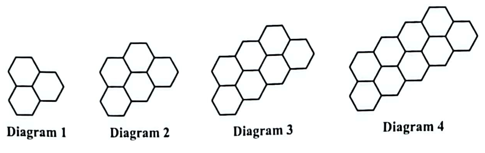
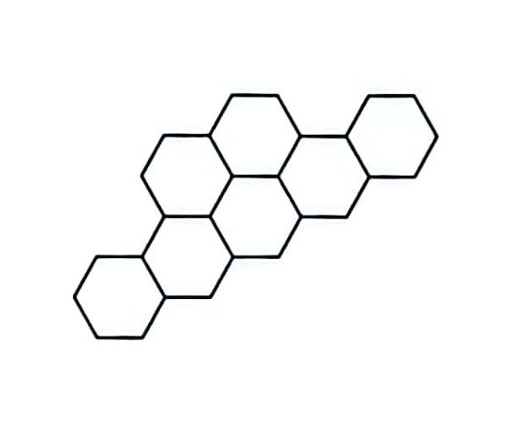
| Diagram Number (D) | Number of Hexagons (H) | Number of Sticks (S) | Perimeter (P) |
|---|---|---|---|
| 1 | 3 | 15 | 12 |
| 2 | 5 | 23 | 16 |
| 3 | 7 | 31 | 20 |
| 4 | 9 | 39 | 24 |
| 5 | ....... | ....... | 28 |
| ....... | 47 | 191 | ....... |
| n | ....... | ....... | ....... |
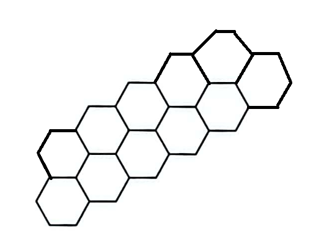
| Diagram Number (D) | Number of Hexagons (H) | Number of Sticks (S) | Perimeter (P) |
|---|---|---|---|
| 1 | 3 | 15 | 12 |
| 2 | 5 | 23 | 16 |
| 3 | 7 | 31 | 20 |
| 4 | 9 | 39 | 24 |
| 5 | 11 | 47 | 28 |
| 23 | 47 | 191 | 100 |
| n | 2n + 1 | 8n + 7 | 4n + 8 |
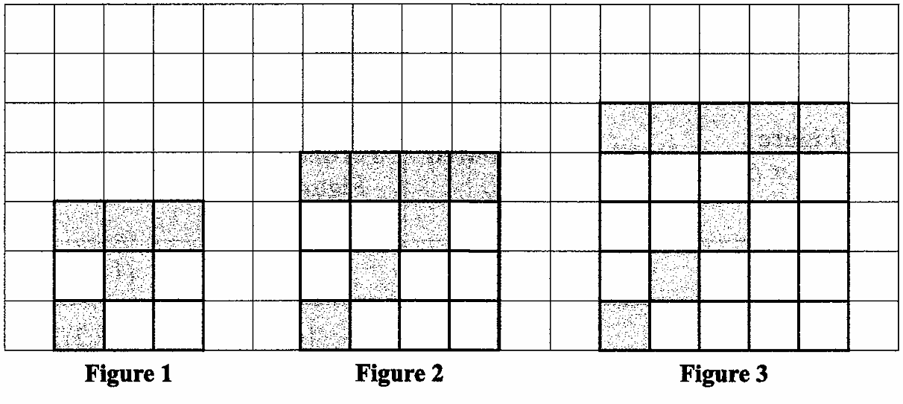
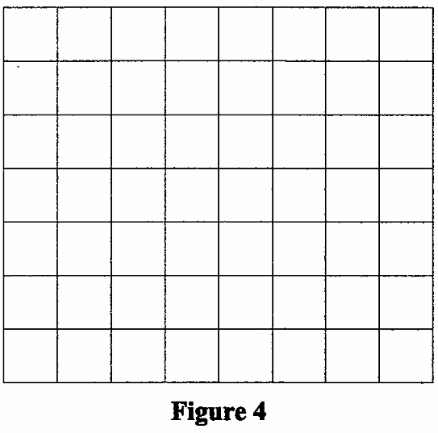
| Figure Number (F) | Number of Coloured Squares (C) | Perimeter of Figure (P) | Total Number of Squares (F) |
|---|---|---|---|
| 1 | 5 | 12 | (1 + 2)² = 9 |
| 2 | 7 | 16 | (2 + 2)² = 16 |
| 3 | 9 | 20 | (3 + 2)² = 25 |
| 11 | ....... | 52 | ....... |
| ....... | 49 | ....... | (23 + 2)² = 625 |
| n | ....... | ....... | ....... |
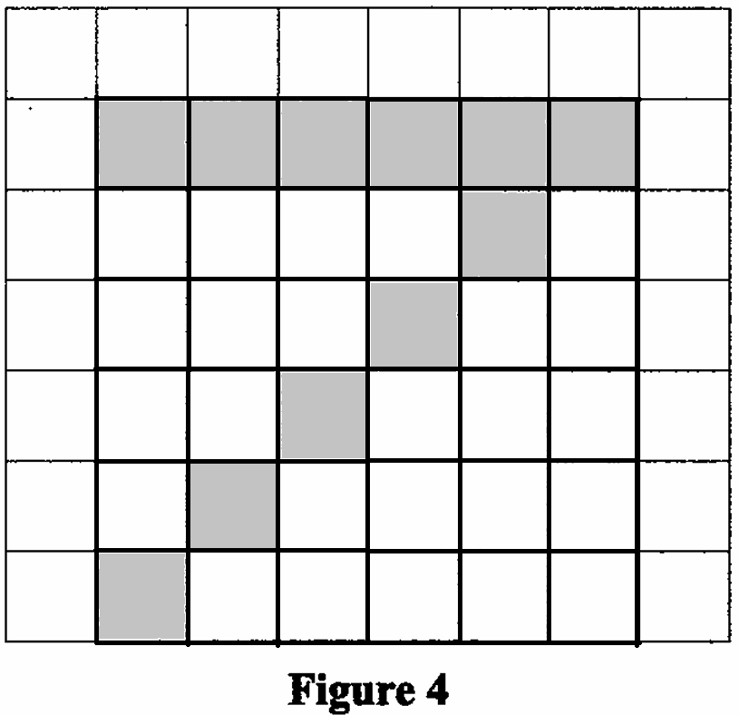
| Figure Number (F) | Number of Coloured Squares (C) | Perimeter of Figure (P) | Total Number of Squares (F) |
|---|---|---|---|
| $\color{darkblue}{1}$ | $5 = \color{darkblue}{1}(2) + 3$ | $12 = 4(\color{darkblue}{1} + 2)$ | $(\color{darkblue}{1} + 2)^2 = 9$ |
| $\color{darkblue}{2}$ | $7 = \color{darkblue}{2}(2) + 3$ | $16 = 4(\color{darkblue}{2} + 2)$ | $(\color{darkblue}{2} + 2)^2 = 16$ |
| $\color{darkblue}{3}$ | $9 = \color{darkblue}{3}(2) + 3$ | $20 = 4(\color{darkblue}{3} + 2)$ | $(\color{darkblue}{3} + 2)^2 = 25$ |
| $\color{darkblue}{11}$ | $\color{darkblue}{11}(2) + 3 = 25$ | $4(\color{darkblue}{11} + 2) = 52$ | $(\color{darkblue}{11} + 2)^2 = 169$ |
| $\color{darkblue}{23}$ | $\color{darkblue}{23}(2) + 3 = 49$ | $4(\color{darkblue}{23} + 2) = 100$ | $(\color{darkblue}{23} + 2)^2 = 625$ |
| $\color{darkblue}{n}$ | $\color{darkblue}{n}(2) + 3 = 2n + 3$ | $4(\color{darkblue}{n} + 2) = 4(n + 2)$ | $(\color{darkblue}{n} + 2)^2 = (n + 2)^2$ |
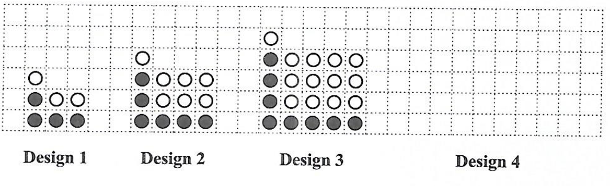
| Design Number (P) | Number of White Discs (W) | Number of Black Discs (B) | Total Number of Discs (T) |
|---|---|---|---|
| 1 | (1 × 1) + 1 + 1 = 3 | 4 | 7 |
| 2 | (2 × 2) + 2 + 1 = 7 | 6 | 13 |
| 3 | (3 × 3) + 3 + 1 = 13 | 8 | 21 |
| 9 | (....... × .......) + ....... + ....... = ....... | ....... | 111 |
| ....... | (20 × 20) + 20 + 1 = 421 | ....... | ....... |
| n | ....... | ....... | ....... |
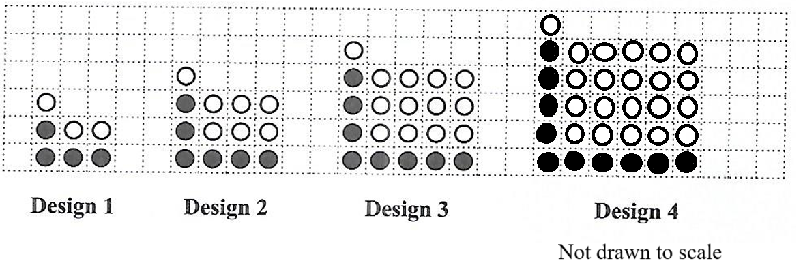
| Design Number (P) | Number of White Discs (W) | Number of Black Discs (B) | Total Number of Discs (T) |
|---|---|---|---|
| $\color{darkblue}{1}$ | $(\color{darkblue}{1} \times \color{darkblue}{1}) + \color{darkblue}{1} + 1 = 3$ | $4 = 2(\color{darkblue}{1}) + 2$ | $7 = (\color{darkblue}{1})^2 + 3(\color{darkblue}{1}) + 3$ |
| $\color{darkblue}{2}$ | $(\color{darkblue}{2} \times \color{darkblue}{2}) + \color{darkblue}{2} + 1 = 7$ | $6 = 2(\color{darkblue}{2}) + 2$ | $13 = (\color{darkblue}{2})^2 + 3(\color{darkblue}{2}) + 3$ |
| $\color{darkblue}{3}$ | $(\color{darkblue}{3} \times \color{darkblue}{3}) + \color{darkblue}{3} + 1 = 13$ | $8 = 2(\color{darkblue}{3}) + 2$ | $21 = (\color{darkblue}{3})^2 + 3(\color{darkblue}{3}) + 3$ |
| $\color{darkblue}{9}$ | $(\color{darkblue}{9} \times \color{darkblue}{9}) + \color{darkblue}{9} + 1 = 19$ | $20 = 2(\color{darkblue}{9}) + 2$ | $111 = (\color{darkblue}{9})^2 + 3(\color{darkblue}{9}) + 3$ |
| $\color{darkblue}{20}$ | $(\color{darkblue}{20} \times \color{darkblue}{20}) + \color{darkblue}{20} + 1 = 421$ | $42 = 2(\color{darkblue}{20}) + 2$ | $463 = (\color{darkblue}{20})^2 + 3(\color{darkblue}{20}) + 3$ |
| $\color{darkblue}{n}$ | $(\color{darkblue}{n} \times \color{darkblue}{n}) + \color{darkblue}{n} + 1 = n^2 + n + 1$ | $2(\color{darkblue}{n}) + 2$ | $(\color{darkblue}{n})^2 + 3(\color{darkblue}{n}) + 3$ |
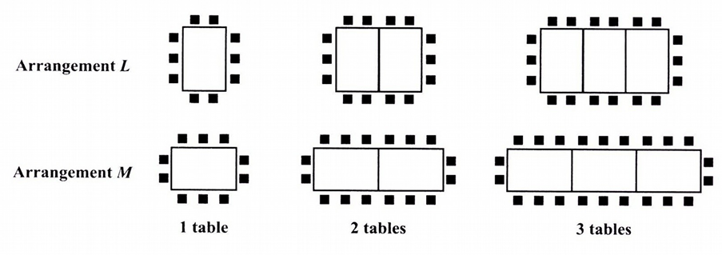
| Number of Tables (T) |
Arrangement L Number of Chairs (C) |
Arrangement M Number of Chairs (C) |
|---|---|---|
| 1 | 10 | 10 |
| 2 | 14 | 16 |
| 3 | 18 | 22 |
| 4 | ....... | ....... |
| ....... | ....... | 130 |
| n | ....... | ....... |
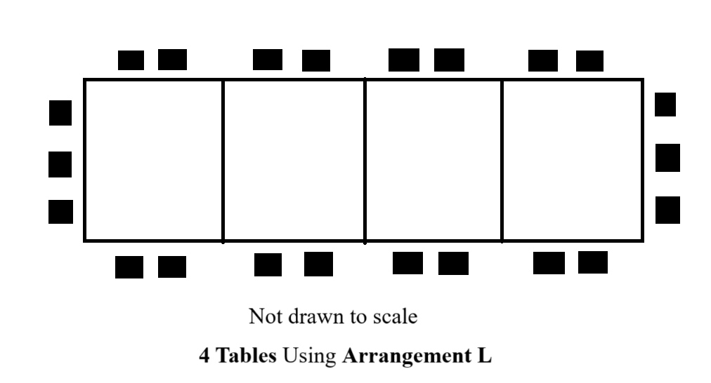
| Number of Tables (T) |
Arrangement L Number of Chairs (C) |
Arrangement M Number of Chairs (C) |
|---|---|---|
| $\color{darkblue}{1}$ | $10 = 2(\color{darkblue}{1} + \color{darkblue}{1}) + 6$ | $10 = 3(\color{darkblue}{1} + \color{darkblue}{1}) + 4$ |
| $\color{darkblue}{2}$ | $14 = 2(\color{darkblue}{2} + \color{darkblue}{2}) + 6$ | $16 = 3(\color{darkblue}{2} + \color{darkblue}{2}) + 4$ |
| $\color{darkblue}{3}$ | $18 = 2(\color{darkblue}{3} + \color{darkblue}{3}) + 6$ | $22 = 3(\color{darkblue}{3} + \color{darkblue}{3}) + 4$ |
| $\color{darkblue}{4}$ | $22 = 2(\color{darkblue}{4} + \color{darkblue}{4}) + 6$ | $28 = 3(\color{darkblue}{4} + \color{darkblue}{4}) + 4$ |
| $\color{darkblue}{21}$ | $90 = 2(\color{darkblue}{21} + \color{darkblue}{21}) + 6$ | $ 3(\color{darkblue}{what} + \color{darkblue}{what}) + 4 = 130 \\[3ex] 3(2what) + 4 = 130 \\[3ex] 6\cdot what + 4 = 130 \\[3ex] 6\cdot what = 130 - 4 \\[3ex] 6\cdot what = 126 \\[3ex] what = \dfrac{126}{6} \\[5ex] what = 21 \\[3ex] \underline{Check} \\[3ex] 130 = 3(\color{darkblue}{21} + \color{darkblue}{21}) + 4 $ |
| $\color{darkblue}{n}$ | $ 2(\color{darkblue}{n} + \color{darkblue}{n}) + 6 \\[3ex] 2(2n) + 6 \\[3ex] 4n + 6 $ | $ 3(\color{darkblue}{n} + \color{darkblue}{n}) + 4 \\[3ex] 3(2n) + 4 \\[3ex] 6n + 4 $ |
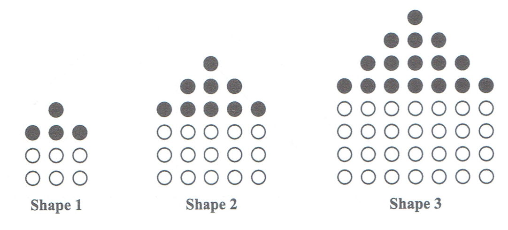
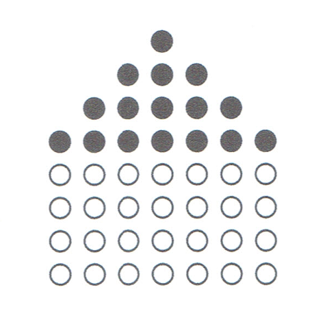
| Shape Number (S) | Number of White Counters (W) | Number of Black Counters (B) | Total Number of Counters (T) |
|---|---|---|---|
| 1 | (1 + 1)[2(1) + 1] = 6 | (1 + 1)² = 4 | 10 |
| 2 | (2 + 1)[2(2) + 1] = 15 | (2 + 1)² = 9 | 24 |
| 3 | (3 + 1)[2(3) + 1] = 28 | (3 + 1)² = 16 | 44 |
| 4 | 45 | ....... | ....... |
| ....... | ....... | 144 | 420 |
| n | (....... + .......)[....... + .......] | (....... + .......)² | $3n^2 + 5n + 2$ |
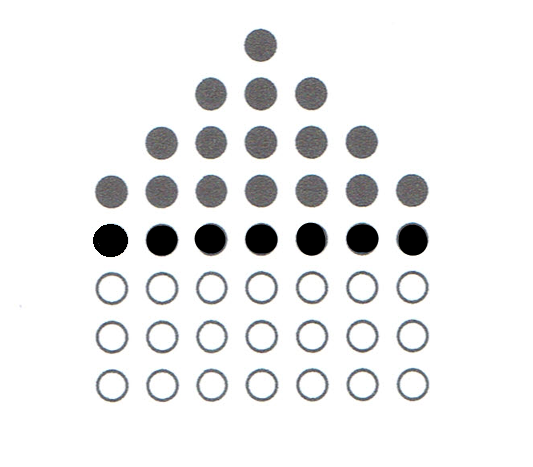
| Shape Number (S) | Number of White Counters (W) | Number of Black Counters (B) | Total Number of Counters (T) |
|---|---|---|---|
| $\color{darkblue}{1}$ | $(\color{darkblue}{1} + 1)[2(\color{darkblue}{1}) + 1] = 6$ | $(\color{darkblue}{1} + 1)^2 = 4$ | 10 |
| $\color{darkblue}{2}$ | $(\color{darkblue}{2} + 1)[2(\color{darkblue}{2}) + 1] = 15$ | $(\color{darkblue}{2} + 1)^2 = 9$ | 24 |
| $\color{darkblue}{3}$ | $(\color{darkblue}{3} + 1)[2(\color{darkblue}{3}) + 1] = 28$ | $(\color{darkblue}{3} + 1)^2 = 16$ | 44 |
| $\color{darkblue}{4}$ | 45 | $(\color{darkblue}{4} + 1)^2 = 5^2 = 25$ | $45 + 25 = 70$ |
| $\color{darkblue}{11}$ | $ W + B = T \\[3ex] W + 144 = 420 \\[3ex] W = 420 - 144 \\[3ex] W = 276 $ |
144 $ (\color{darkblue}{S} + 1)^2 \\[4ex] (S + 1)^2 = 144 \\[4ex] S + 1 = \sqrt{144} \\[3ex] S + 1 = 12 \\[3ex] S = 12 - 1 \\[3ex] S = 11 $ |
420 |
| $\color{darkblue}{n}$ | $ (\color{darkblue}{n} + 1)[2(\color{darkblue}{n}) + 1] \\[3ex] (\color{darkblue}{n} + 1)[2\color{darkblue}{n} + 1] $ | $(\color{darkblue}{n} + 1)^2$ | $3n^2 + 5n + 2$ |
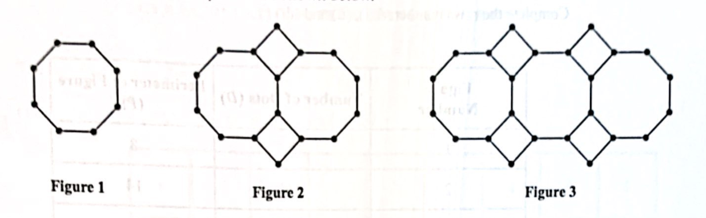
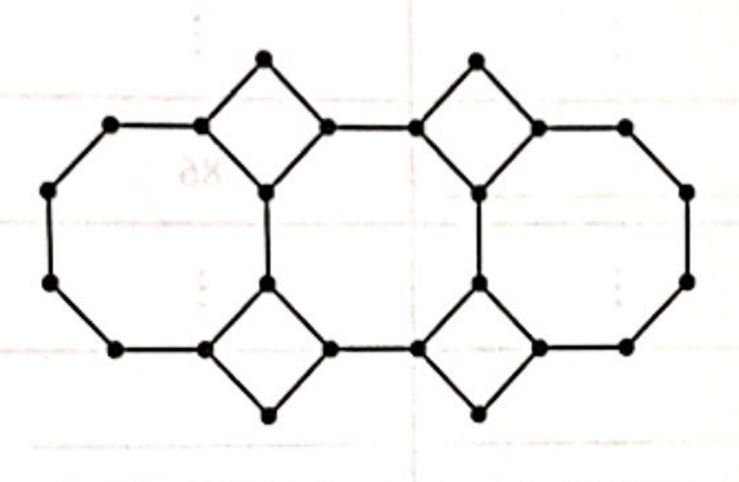
| Figure Number | Number of Dots (D) | Perimeter of Figure (P) |
|---|---|---|
| 1 | 8 | 8 |
| 2 | 16 | 14 |
| 3 | 24 | 20 |
| 4 | ....... | ....... |
| ....... | ....... | 86 |
| n | ....... | ....... |
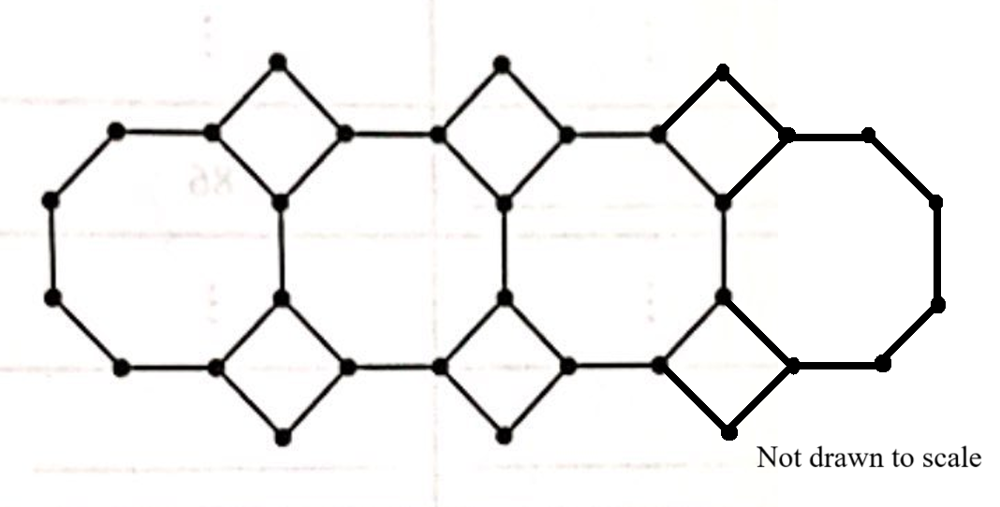
| Figure Number | Number of Dots (D) | Perimeter of Figure (P) |
|---|---|---|
| $\color{darkblue}{1}$ | $8 = 8(\color{darkblue}{1})$ | $8 = 6(\color{darkblue}{1}) + 2$ |
| $\color{darkblue}{2}$ | $16 = 8(\color{darkblue}{2})$ | $14 = 6(\color{darkblue}{2}) + 2$ |
| $\color{darkblue}{3}$ | $24 = 8(\color{darkblue}{3})$ | $20 = 6(\color{darkblue}{3}) + 2$ |
| $\color{darkblue}{4}$ | $32 = 8(\color{darkblue}{4})$ | $26 = 6(\color{darkblue}{4}) + 2$ |
| $\color{darkblue}{14}$ | $112 = 8(\color{darkblue}{14})$ | $86 = 6(\color{darkblue}{14}) + 2$ |
| $\color{darkblue}{n}$ | $8(\color{darkblue}{n})$ | $6(\color{darkblue}{n}) + 2$ |
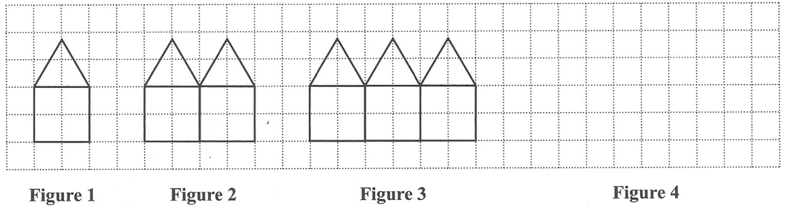
| Figure | Number of Lines (L) | Perimeter (P) |
|---|---|---|
| 1 | 6 | 5 |
| 2 | 11 | 8 |
| 3 | 16 | 11 |
| 5 | ....... | ....... |
| ....... | 66 | ....... |
| n | ....... | ....... |
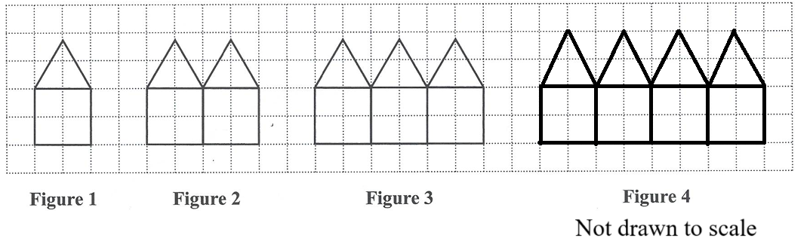
| Figure | Number of Lines (L) | Perimeter (P) |
|---|---|---|
| $\color{darkblue}{1}$ | $6 = 5(\color{darkblue}{1}) + 1$ | $5 = 3(\color{darkblue}{1}) + 2$ |
| $\color{darkblue}{2}$ | $11 = 5(\color{darkblue}{2}) + 1$ | $8 = 3(\color{darkblue}{2}) + 2$ |
| $\color{darkblue}{3}$ | $16 = 5(\color{darkblue}{3}) + 1$ | $11 = 3(\color{darkblue}{3}) + 2$ |
| $\color{darkblue}{5}$ | $26 = 5(\color{darkblue}{5}) + 1$ | $17 = 3(\color{darkblue}{5}) + 2$ |
| $\color{darkblue}{13}$ | $66 = 5(\color{darkblue}{13}) + 1$ | $41 = 3(\color{darkblue}{13}) + 2$ |
| $\color{darkblue}{n}$ | $5(\color{darkblue}{n}) + 1$ | $3(\color{darkblue}{n}) + 2$ |
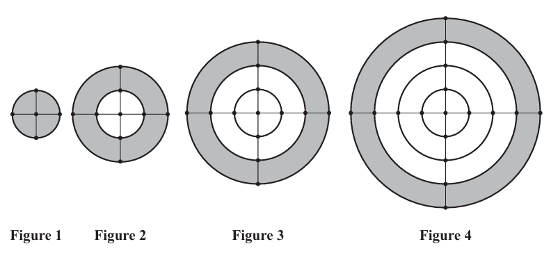
| Figure Number | Number of Dots | Area of Outer (Largest) Circle | Area of Shaded Region | Total Length of Circumference of all Circles |
|---|---|---|---|---|
| 1 | 5 | π | π | 2π |
| 2 | 9 | 4π | 3π | 6π |
| 3 | 13 | 9π | 5π | 12π |
| 4 | 17 | 16π | 7π | 20π |
| 5 | ....... | 25π | ....... | ....... |
| n | ....... | ....... | ....... | ....... |
| Figure Number | Number of Dots | Number of Circles | Radii of Circles, r | Area of Outer (Largest) Circle = πr2 | Area of Larger Circle = πr2 | Area of Shaded Region = Area of Largest Circle − Area of Larger Circle (Number of Circles > 1) | Total Length of Circumference of all Circles = 2πr |
|---|---|---|---|---|---|---|---|
| 1 | 5 | 1 | 1 | $ \pi \cdot (1)^2 \\[3ex] \pi $ | $ \pi \cdot (1)^2 \\[3ex] \pi $ | $ \pi \cdot (1)^2 \\[3ex] \pi $ | $ 2\pi(1) \\[3ex] 2\pi $ |
| 2 | $ 5 + 4 = 9 \\[3ex] \implies \\[3ex] 5 + 4(1) \\[3ex] 5 + 4(\color{darkblue}{2} - 1) $ | 2 | 1, 2 | $ \pi \cdot (\color{darkblue}{2})^2 \\[3ex] 4\pi $ | $ \pi \cdot (\color{darkblue}{2} - 1)^2 \\[3ex] \pi \cdot (1)^2 \\[3ex] \pi $ | $ 4\pi - \pi = 3\pi $ | $ 2\pi(1) + 2\pi(2) \\[3ex] 2\pi + 4\pi 6\pi \\[3ex] \implies \\[3ex] \pi \cdot 2 \cdot 3 \\[3ex] \pi \cdot \color{darkblue}{2} \cdot (\color{darkblue}{2} + 1) $ |
| 3 | $ 5 + 4 + 4 = 13 \\[3ex] \implies \\[3ex] 5 + 4(2) \\[3ex] 5 + 4(\color{darkblue}{3} - 1) $ | 3 | 1, 2, 3 | $ \pi \cdot (\color{darkblue}{3})^2 \\[3ex] 9\pi $ | $ \pi \cdot (\color{darkblue}{3} - 1)^2 \\[3ex] \pi \cdot (2)^2 \\[3ex] 4\pi $ | $ 9\pi - 4\pi = 5\pi $ | $ 2\pi(1) + 2\pi(2) + 2\pi(3) \\[3ex] 2\pi + 4\pi + 6\pi \\[3ex] 12\pi \\[3ex] \implies \\[3ex] \pi \cdot 3 \cdot 4 \\[3ex] \pi \cdot \color{darkblue}{3} \cdot (\color{darkblue}{3} + 1) $ |
| 4 | $ 5 + 4 + 4 + 4 = 17 \\[3ex] \implies \\[3ex] 5 + 4(3) \\[3ex] 5 + 4(\color{darkblue}{4} - 1) $ | 4 | 1, 2, 3, 4 | $ \pi \cdot (\color{darkblue}{4})^2 \\[3ex] 16\pi $ | $ \pi \cdot (\color{darkblue}{4} - 1)^2 \\[3ex] \pi \cdot (3)^2 \\[3ex] 9\pi $ | $ 16\pi - 9\pi = 7\pi $ | $ 2\pi(1) + 2\pi(2) + 2\pi(3) + 2\pi(4) \\[3ex] 2\pi + 4\pi + 6\pi + 8\pi \\[3ex] 20\pi \\[3ex] \implies \\[3ex] \pi \cdot 4 \cdot 5 \\[3ex] \pi \cdot \color{darkblue}{4} \cdot (\color{darkblue}{4} + 1) $ |
| 5 | $ 5 + 4 + 4 + 4 + 4 = 21 \\[3ex] \implies \\[3ex] 5 + 4(4) \\[3ex] 5 + 4(\color{darkblue}{5} - 1) $ | 4 | 1, 2, 3, 4, 5 | $ \pi \cdot (\color{darkblue}{5})^2 \\[3ex] 25\pi $ | $ \pi \cdot (\color{darkblue}{5} - 1)^2 \\[3ex] \pi \cdot (4)^2 \\[3ex] 16\pi $ | $ 25\pi - 16\pi = 9\pi $ | $ 2\pi(1) + 2\pi(2) + 2\pi(3) + 2\pi(4) + 2\pi(5) \\[3ex] 2\pi + 4\pi + 6\pi + 8\pi + 10\pi \\[3ex] 30\pi \implies \\[3ex] \pi \cdot 5 \cdot 6 \\[3ex] \pi \cdot \color{darkblue}{5} \cdot (\color{darkblue}{5} + 1) $ |
| n | $ 5 + 4(\color{darkblue}{n} - 1) \\[3ex] 5 + 4n - 4 \\[3ex] 4n + 1 $ | n | $1, 2, 3, 4, 5, ..., n - 1, n$ | $ \pi \cdot (\color{darkblue}{n})^2 \\[3ex] \pi n^2 $ | $ \pi(\color{darkblue}{n} - 1)^2 $ | $ \pi n^2 - \pi(n - 1)^2 \\[3ex] \pi[n^2 - (n - 1)^2] \\[3ex] \pi[n^2 - (n - 1)(n - 1)] \\[3ex] \pi[n^2 - (n^2 - n - n + 1)] \\[3ex] \pi[n^2 - (n^2 - 2n + 1)] \\[3ex] \pi(n^2 - n^2 + 2n - 1) \\[3ex] \pi(2n - 1) $ | $ \implies \\[3ex] \pi \cdot n \cdot n + 1 \\[3ex] \pi \cdot \color{darkblue}{n} \cdot (\color{darkblue}{n} + 1) \\[3ex] \pi n(n + 1) $ |
© 2025 Exams Success Group:
Your
Success in Exams is Our Priority
The Joy of a Teacher is the Success of his
Students.